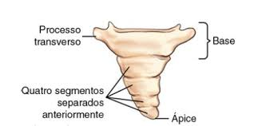
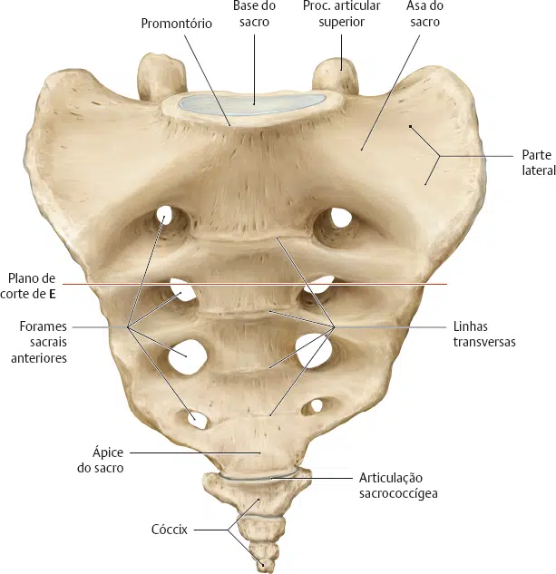
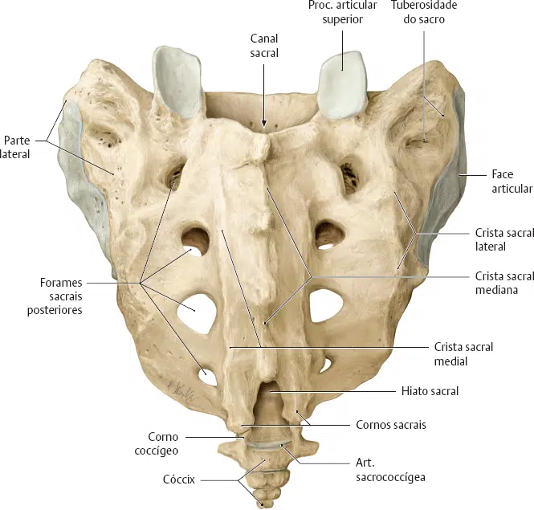

Muito parecido com o osso sacro, o osso cóccix é formado por 4 vértebras fundidas.
Esta porção da coluna vertebral é muito regredida em seres humanos, tendo pouca semelhança com o restante das vértebras.
Suas características são:
Processos transversos;
Corno coccígeo;
Base;
Ápice.


